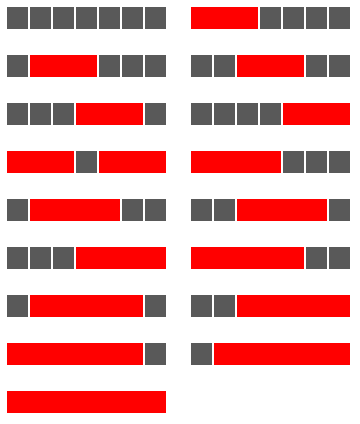

A row measuring seven units in length has red blocks with a minimum length of three units placed on it, such that any two red blocks (which are allowed to be different lengths) are separated by at least one grey square. There are exactly seventeen ways of doing this.

How many ways can a row measuring fifty units in length be filled?
NOTE: Although the example above does not lend itself to the possibility, in general it is permitted to mix block sizes. For example, on a row measuring eight units in length you could use red (3), grey (1), and red (4).
solve(row_length=7, min_red_block_length=3) → ?solve(row_length=50, min_red_block_length=3) → ?